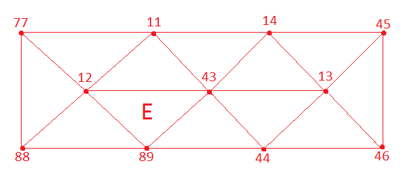

API documentation
Index
FEMBase.AssemblyFEMBase.DCTIFEMBase.DCTVFEMBase.DVTIFEMBase.DVTVFEMBase.ElementFEMBase.FieldFEMBase.FieldFEMBase.IncrementFEMBase.ProblemFEMBase.ProblemFEMBase.ProblemFEMBasis.BasisInfoFEMBasis.BasisInfoFEMBasis.NSegBase.:*Base.:*Base.:*Base.:*Base.SparseArrays.sparseBase.getindexBase.getindexBase.haskeyBase.isapproxBase.lengthBase.similarFEMBase.add!FEMBase.add!FEMBase.add!FEMBase.add!FEMBase.add_elements!FEMBase.assemble_mass_matrix!FEMBase.get_gdofsFEMBase.get_global_solutionFEMBase.get_integration_pointsFEMBase.get_local_coordinatesFEMBase.get_nonzero_rowsFEMBase.get_parent_field_nameFEMBase.get_unknown_field_dimensionFEMBase.get_unknown_field_nameFEMBase.group_by_element_typeFEMBase.initialize!FEMBase.insideFEMBase.optimize!FEMBase.resize_sparseFEMBase.resize_sparsevecFEMBase.update!FEMBase.update!FEMBase.update!FEMBase.update!FEMBase.update!FEMBasis.calculate_basis_coefficientsFEMBasis.calculate_interpolation_polynomial_derivativesFEMBasis.calculate_interpolation_polynomialsFEMBasis.eval_basis!FEMBasis.gradFEMBasis.gradFEMBasis.grad!FEMBasis.interpolateFEMBasis.jacobianFEMQuad.get_quadrature_pointsFEMQuad.get_quadrature_pointsFEMQuad.get_quadrature_pointsFEMQuad.get_quadrature_pointsFEMQuad.get_quadrature_pointsFEMQuad.get_quadrature_pointsFEMQuad.get_quadrature_pointsFEMQuad.get_quadrature_pointsFEMQuad.get_quadrature_pointsFEMQuad.get_quadrature_pointsFEMQuad.get_quadrature_pointsFEMQuad.get_quadrature_pointsFEMQuad.get_quadrature_pointsFEMQuad.get_quadrature_pointsFEMQuad.get_quadrature_pointsFEMQuad.get_quadrature_pointsFEMQuad.get_quadrature_pointsFEMQuad.get_quadrature_pointsFEMQuad.get_quadrature_pointsFEMQuad.get_quadrature_pointsFEMQuad.get_quadrature_pointsFEMQuad.get_quadrature_pointsFEMQuad.get_quadrature_pointsFEMQuad.get_quadrature_pointsFEMQuad.get_quadrature_pointsFEMQuad.get_quadrature_pointsFEMQuad.get_quadrature_pointsFEMQuad.get_quadrature_pointsFEMQuad.get_quadrature_pointsFEMQuad.get_quadrature_pointsFEMQuad.get_quadrature_pointsFEMQuad.get_quadrature_points
FEMBase.Assembly — Type.General linearized problem to solve (K₁+K₂)Δu + C1'Δλ = f₁+f₂ C2Δu + DΔλ = g
FEMBase.DCTI — Method.Discrete, constant, time-invariant field. This is constant in both spatial direction and time direction, i.e. df/dX = 0 and df/dt = 0.
This is the most basic type of field having no anything special functionality.
Examples
julia> f = DCTI() julia> update!(f, 1.0)
Multiplying by constant works:
julia> 2*f 2.0
Interpolation in time direction gives the same constant:
julia> f(1.0) 1.0
By default, when calling Field with scalar, DCTI is assumed, i.e.
julia> Field(0.0) == DCTI(0.0) true
FEMBase.DCTV — Method.Discrete, constant, time variant field. This is constant in spatial direction but non-constant in time direction, i.e. df/dX = 0 but df/dt != 0.
Examples
julia> t0 = 0.0; t1=1.0; y0 = 0.0; y1 = 1.0 julia> f = DCTV(t0 => y0, t1 => y1)
FEMBase.DVTI — Method.Discrete, variable, time-invariant field. This is constant in time direction, but not in spatial direction, i.e. df/dt = 0 but df/dX != 0. The basic structure of data is Vector, and it is implicitly assumed that length of field matches to the number of shape functions, so that interpolation in spatial direction works.
FEMBase.DVTV — Method.Discrete, variable, time variant fields.
FEMBase.Element — Method.Element(element_type, connectivity_vector)Construct a new element where element_type is the type of the element and connectivity_vector is the vector of nodes that the element is connected to.
Examples
In the example a new element (E in the figure below) of type Tri3 is created. This spesific element connects to nodes 89, 43, 12 in the finite element mesh.
element = Element(Tri3, [89, 43, 12])
FEMBase.Problem — Type.Defines types for Problem variables.
Examples
The type of 'elements' is Vector{Element}
Add elements into the Problem element list.
a = [1, 2, 3]
Problem.elements = aFEMBase.Problem — Method.Problem(problem_type, problem_name::String, problem_dimension)Construct a new field problem where problem_type is the type of the problem (Elasticity, Dirichlet, etc.), problem_name is the name of the problem and problem_dimension is the number of DOF:s in one node (2 in a 2D problem, 3 in an elastic 3D problem, 6 in a 3D beam problem, etc.).
Examples
Create a vector-valued (dim=3) elasticity problem:
prob1 = Problem(Elasticity, "this is my problem", 3)FEMBase.Problem — Method.Construct a new boundary problem.
Examples
Create a Dirichlet boundary problem for a vector-valued (dim=3) elasticity problem.
julia> bc1 = Problem(Dirichlet, "support", 3, "displacement") solver.
FEMBase.add! — Function.Add new data to COO Sparse vector.
FEMBase.add! — Method.Add local element matrix to sparse matrix. This basically does:
A[dofs1, dofs2] = A[dofs1, dofs2] + data
Example
S = [3, 4] M = [6, 7, 8] data = Float64[5 6 7; 8 9 10] A = SparseMatrixCOO() add!(A, S, M, data) full(A)
4x8 Array{Float64,2}: 0.0 0.0 0.0 0.0 0.0 0.0 0.0 0.0 0.0 0.0 0.0 0.0 0.0 0.0 0.0 0.0 0.0 0.0 0.0 0.0 0.0 5.0 6.0 7.0 0.0 0.0 0.0 0.0 0.0 8.0 9.0 10.0
FEMBase.add! — Method.Add sparse matrix of CSC to COO.
FEMBase.add! — Method.Add SparseVector to SparseVectorCOO.
FEMBase.add_elements! — Method.add_elements!(problem::Problem, elements)Add new elements into the problem.
FEMBase.get_gdofs — Method.Return global degrees of freedom for element.
Notes
First look dofs from problem.dofmap, it not found, update dofmap from element.element connectivity using formula gdofs = [dim*(nid-1)+j for j=1:dim]
look element dofs from problem.dofmap
if not found, use element.connectivity to update dofmap and 1.
FEMBase.get_integration_points — Method.This is a special case, temporarily change order of integration scheme mainly for mass matrix.
FEMBase.get_unknown_field_dimension — Method.Return the dimension of the unknown field of this problem.
FEMBase.get_unknown_field_name — Method.Return the name of the unknown field of this problem.
FEMBase.group_by_element_type — Method.group_by_element_type(elements::Vector{Element})Given a vector of elements, group elements by element type to several vectors. Returns a dictionary, where key is the element type and value is a vector containing all elements of type element_type.
FEMBase.initialize! — Method.function initialize!(problem_type, element_name, time)Initialize the element ready for calculation, where problem_type is the type of the problem (Elasticity, Dirichlet, etc.), element_name is the name of a constructed element (see Element(element_type, connectivity_vector)) and time is the starting time of the initializing process.
FEMBase.update! — Method.update!(problem, assembly, u, la)Update the problem solution vector for assembly.
FEMBase.update! — Method.Update element field based on a dictionary of nodal data and connectivity information.
Examples
julia> data = Dict(1 => [0.0, 0.0], 2 => [1.0, 2.0]) julia> element = Seg2([1, 2]) julia> update!(element, "geometry", data)
As a result element now have time invariant (variable) vector field "geometry" with data ([0.0, 0.0], [1.0, 2.0]).
FEMBase.update! — Method.update!(problem, assembly, elements, time)Update a solution from the assebly to elements.
FEMBase.update! — Method.update!(problem.properties, attr...)Update properties for a problem.
Example
update!(body.properties, "finite_strain" => "false")FEMBase.update! — Method.Update time-dependent fields with new values.
Examples
julia> f = Field(0.0 => 1.0) julia> update!(f, 1.0 => 2.0)
Now field has two (time, value) pairs: (0.0, 1.0) and (1.0, 2.0)
Notes
Time vector is assumed to be ordered t_i-1 < t_i < t_i+1. If updating field with already existing time the old value is replaced with new one.
FEMBase.Field — Method.For vector data, DVTI is automatically created.
julia> DVTI([1.0, 2.0]) == Field([1.0, 2.0]) true
FEMBase.Field — Method.For dictionary data, DVTI is automatically created.
Define e.g. nodal coordinates in dictionary julia> X = Dict(1 => [1.0, 2.0], 2 => [3.0, 4.0]) julia> Field(X) == DVTI(X)
FEMBase.Increment — Type.Simple time frame / increment to contain both time and data.
Base.:* — Method.Kind of spatial interpolation of DCTI.
Base.:* — Method.Take outer product of DVTI field and matrix T.
Base.:* — Method.Take scalar product of DVTI and constant T.
Base.:* — Method.Take dot product of DVTI field and vector T. Vector length must match to the field length and this can be used mainly for interpolation purposes, i.e., u = ∑ Nᵢuᵢ.
Base.SparseArrays.sparse — Method.Convert from COO format to CSC.
Parameters
tol used to drop near zero values less than tol.
Base.getindex — Method.Multi-slicing of field.
julia> f = DVTI([1.0, 2.0, 3.0]) julia> f[[1, 3]] [1.0, 3.0]
Base.getindex — Method.Default slicing of field.
julia> f = DVTI([1.0, 2.0]) julia> f[1] 1.0
Base.haskey — Method.Check existence of field.
Base.isapprox — Method.Approximative comparison of two matricse A and B.
Base.length — Method.length(element::Element)Return the number of nodes in element.
Base.similar — Method.Create a similar DVTI field from vector data.
julia> f1 = DVTI(Vector[[1.0, 2.0], [3.0, 4.0]]) julia> f2 = similar(f1, [2.0, 3.0, 4.0, 5.0]) julia> f2 == DVTI(Vector[[2.0, 3.0], [4.0, 5.0]]) true
FEMBase.assemble_mass_matrix! — Method.assemble_mass_matrix!(problem, elements::Vector{Element{Tet10}}, time)Assemble Tet10 mass matrices using special method. If Tet10 has constant metric if can be integrated analytically to gain performance.
FEMBase.get_global_solution — Method.get_global_solution(problem, assembly)Return a global solution (u, la) for a problem.
Notes
If the length of solution vector != number of nodes, i.e. the field dimension is something else than 1, reshape vectors so that their length matches to the number of nodes. This helps to get nodal results easily.
FEMBase.get_local_coordinates — Method.Find inverse isoparametric mapping of element.
FEMBase.get_nonzero_rows — Method.Find all nonzero rows from sparse matrix.
Returns
Ordered list of row indices.
FEMBase.get_parent_field_name — Method.Return the name of the parent field of this (boundary) problem.
FEMBase.inside — Method.Test is X inside element.
FEMBase.optimize! — Method.Combine (I,J,V) values if possible to reduce memory usage.
FEMBase.resize_sparse — Method.Resize sparse matrix A to (higher) dimension n x m.
FEMBase.resize_sparsevec — Method.Resize sparse vector b to (higher) dimension n.
FEMBasis.BasisInfo — Type.Data type for fast FEM.
FEMBasis.BasisInfo — Method.Initialization of data type BasisInfo.
Examples
BasisInfo(Tri3)
# output
FEMBasis.BasisInfo{FEMBasis.Tri3,Float64}([0.0 0.0 0.0], [0.0 0.0 0.0; 0.0 0.0 0.0], [0.0 0.0 0.0; 0.0 0.0 0.0], [0.0 0.0; 0.0 0.0], [0.0 0.0; 0.0 0.0], 0.0)
FEMBasis.NSeg — Type.NURBS segment.
FEMBasis.eval_basis! — Method.Evaluate basis, gradient and so on for some point xi.
Examples
b = BasisInfo(Quad4)
X = ((0.0,0.0), (1.0,0.0), (1.0,1.0), (0.0,1.0))
xi = (0.0, 0.0)
eval_basis!(b, X, xi)
# output
FEMBasis.BasisInfo{FEMBasis.Quad4,Float64}([0.25 0.25 0.25 0.25], [-0.25 0.25 0.25 -0.25; -0.25 -0.25 0.25 0.25], [-0.5 0.5 0.5 -0.5; -0.5 -0.5 0.5 0.5], [0.5 0.0; 0.0 0.5], [2.0 -0.0; -0.0 2.0], 0.25)
FEMBasis.grad! — Method.grad!(bi, gradu, u)Evalute gradient ∂u/∂X and store result to matrix gradu. It is assumed that eval_basis! has been already run to bi so it already contains all necessary matrices evaluated with some X and xi.
Example
First setup and evaluate basis using eval_basis!:
B = BasisInfo(Quad4)
X = ((0.0,0.0), (1.0,0.0), (1.0,1.0), (0.0,1.0))
xi = (0.0, 0.0)
eval_basis!(B, X, xi)
# output
FEMBasis.BasisInfo{FEMBasis.Quad4,Float64}([0.25 0.25 0.25 0.25], [-0.25 0.25 0.25 -0.25; -0.25 -0.25 0.25 0.25], [-0.5 0.5 0.5 -0.5; -0.5 -0.5 0.5 0.5], [0.5 0.0; 0.0 0.5], [2.0 -0.0; -0.0 2.0], 0.25)
Next, calculate gradient of u:
u = ((0.0, 0.0), (1.0, -1.0), (2.0, 3.0), (0.0, 0.0))
gradu = zeros(2, 2)
grad!(B, gradu, u)
# output
2×2 Array{Float64,2}:
1.5 0.5
1.0 2.0FEMBasis.grad — Method.grad(B, T, X, xi)Calculate gradient of T with respect to X in point xi using basis B.
Example
B = Quad4()
X = ([0.0, 0.0], [1.0, 0.0], [1.0, 1.0], [0.0, 1.0])
u = ([0.0, 0.0], [1.0, -1.0], [2.0, 3.0], [0.0, 0.0])
grad(B, u, X, (0.0, 0.0))
# output
2×2 Array{Float64,2}:
1.5 0.5
1.0 2.0
FEMBasis.grad — Method.grad(B, X, xi)Given basis B, calculate gradient dB/dX at xi.
Example
B = Quad4()
X = ([0.0, 0.0], [1.0, 0.0], [1.0, 1.0], [0.0, 1.0])
grad(B, X, (0.0, 0.0))
# output
2×4 Array{Float64,2}:
-0.5 0.5 0.5 -0.5
-0.5 -0.5 0.5 0.5
FEMBasis.interpolate — Method.interpolate(B, T, xi)Given basis B, interpolate T at xi.
Example
B = Quad4()
X = ((0.0, 0.0), (1.0, 0.0), (1.0, 1.0), (0.0, 1.0))
T = (1.0, 2.0, 3.0, 4.0)
interpolate(B, T, (0.0, 0.0))
# output
2.5
FEMBasis.calculate_basis_coefficients — Method.function calculate_basis_coefficients(polynomial::String, coordinates::Vararg{Tuple})Calculate "interpolate coefficient matrix" for some polynomial p.
Examples
That is, if we have polynomial p = 1 + u + v and coordinates (0,0), (1,0), (0,1), we find A*p such that first row is the first coordinate, second row is second coordinate and so on:
julia> p = "1 + u + w"
julia> X = ((0.0,0.0), (1.0,0.0), (0.0,1.0))
julia> calculate_basis_coefficient(p, X)
[1.0 0.0 0.0 # <-- p(0.0,0.0) = 1.0 = [1.0 0.0 0.0] * [1.0, u, v]
1.0 1.0 0.0 # <-- p(1.0,0.0) = 1.0 + u = [1.0 1.0 0.0] * [1.0, u, v]
1.0 0.0 1.0] # <- p(0.0,1.0) = 1.0 + v = [1.0 0.0 1.0] * [1.0, u, v]Calculate derivatives of basis functions with respect to parameters u, v, w.
FEMBasis.jacobian — Method.jacobian(B, X, xi)Given basis B, calculate jacobian at xi.
Example
B = Quad4()
X = ([0.0, 0.0], [1.0, 0.0], [1.0, 1.0], [0.0, 1.0])
jacobian(B, X, (0.0, 0.0))
# output
2×2 Array{Float64,2}:
0.5 0.0
0.0 0.5
FEMQuad.get_quadrature_points — Method.Gauss-Legendre quadrature, 1 point rule on hexahedron.
FEMQuad.get_quadrature_points — Method.Gauss-Legendre quadrature, 243 point rule on quadrilateral.
FEMQuad.get_quadrature_points — Method.Gauss-Legendre quadrature, 27 point rule on hexahedron.
FEMQuad.get_quadrature_points — Method.Gauss-Legendre quadrature, 81 point rule on hexahedron.
FEMQuad.get_quadrature_points — Method.Gauss-Legendre quadrature, 8 point rule on hexahedron.
FEMQuad.get_quadrature_points — Method.Gauss-Legendre quadrature, 5 point rule on pyramid.
FEMQuad.get_quadrature_points — Method.Gauss-Legendre quadrature, 5 point rule on pyramid.
FEMQuad.get_quadrature_points — Method.Gauss-Legendre quadrature, 16 point rule on quadrilateral.
FEMQuad.get_quadrature_points — Method.Gauss-Legendre quadrature, 1 point rule on quadrilateral.
FEMQuad.get_quadrature_points — Method.Gauss-Legendre quadrature, 25 point rule on quadrilateral.
FEMQuad.get_quadrature_points — Method.Gauss-Legendre quadrature, 4 point rule on quadrilateral.
FEMQuad.get_quadrature_points — Method.Gauss-Legendre quadrature, 9 point rule on quadrilateral.
FEMQuad.get_quadrature_points — Method.Gauss-Legendre quadrature, 1 point rule on segment.
FEMQuad.get_quadrature_points — Method.Gauss-Legendre quadrature, 2 point rule on segment.
FEMQuad.get_quadrature_points — Method.Gauss-Legendre quadrature, 3 point rule on segment.
FEMQuad.get_quadrature_points — Method.Gauss-Legendre quadrature, 4 point rule on segment.
FEMQuad.get_quadrature_points — Method.Gauss-Legendre quadrature, 5 point rule on segment.
FEMQuad.get_quadrature_points — Method.Gauss-Legendre quadrature, 15 point rule on tetrahedron.
FEMQuad.get_quadrature_points — Method.Gauss-Legendre quadrature, 1 point rule on tetrahedron.
FEMQuad.get_quadrature_points — Method.Gauss-Legendre quadrature, 4 point rule on tetrahedron.
FEMQuad.get_quadrature_points — Method.Gauss-Legendre quadrature, 5 point rule on tetrahedron.
FEMQuad.get_quadrature_points — Method.Gauss-Legendre quadrature, 12 point rule on triangle.
FEMQuad.get_quadrature_points — Method.Gauss-Legendre quadrature, 1 point rule on triangle.
FEMQuad.get_quadrature_points — Method.Gauss-Legendre quadrature, 3 point rule on triangle.
FEMQuad.get_quadrature_points — Method.Gauss-Legendre quadrature, 3 point rule on triangle.
FEMQuad.get_quadrature_points — Method.Gauss-Legendre quadrature, 4 point rule on triangle.
FEMQuad.get_quadrature_points — Method.Gauss-Legendre quadrature, 4 point rule on triangle.
FEMQuad.get_quadrature_points — Method.Gauss-Legendre quadrature, 6 point rule on triangle.
FEMQuad.get_quadrature_points — Method.Gauss-Legendre quadrature, 7 point rule on triangle.
FEMQuad.get_quadrature_points — Method.Gauss-Legendre quadrature, 21 point rule on wedge.
FEMQuad.get_quadrature_points — Method.Gauss-Legendre quadrature, 6 point rule on wedge.
FEMQuad.get_quadrature_points — Method.Gauss-Legendre quadrature, 6 point rule on wedge.